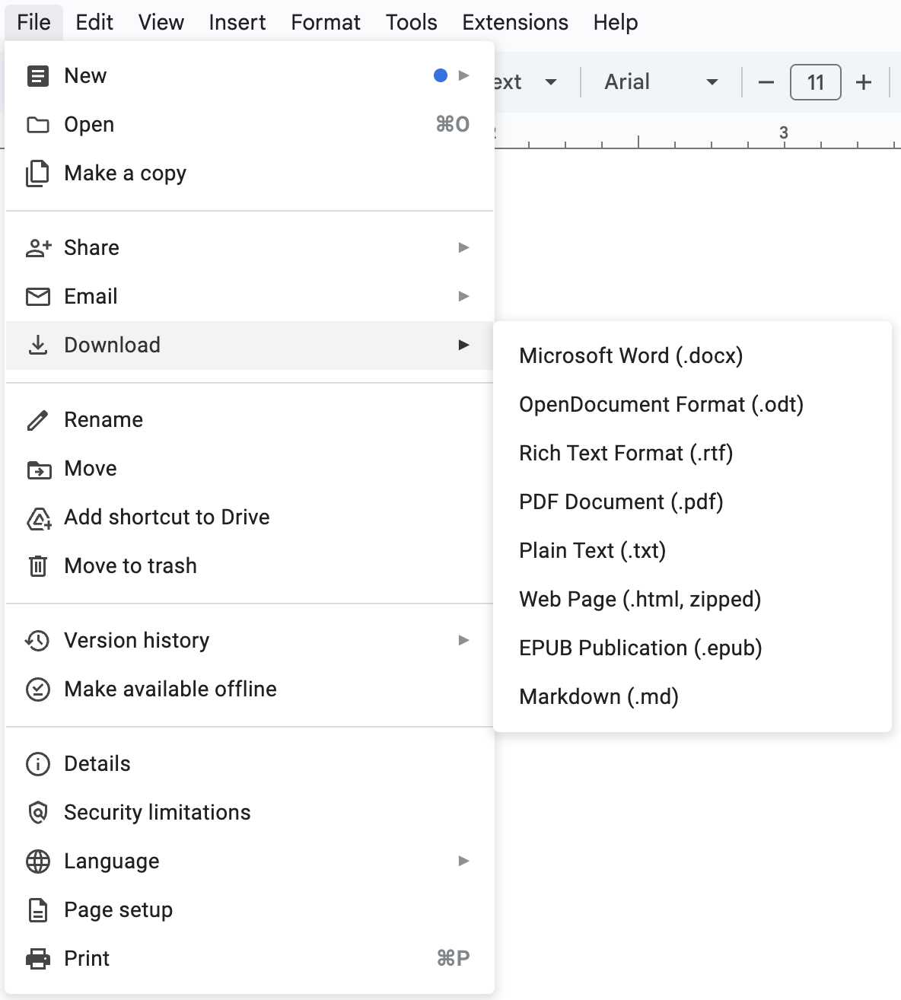
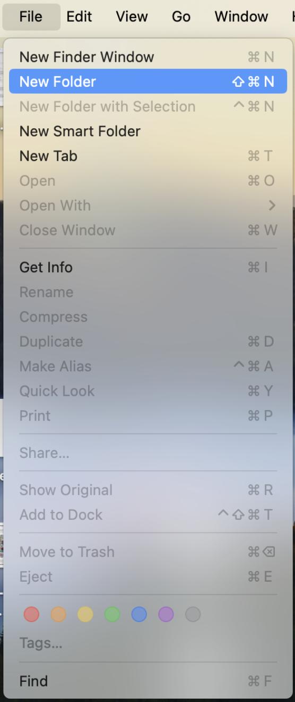
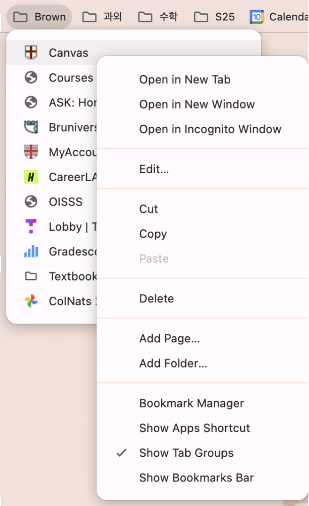
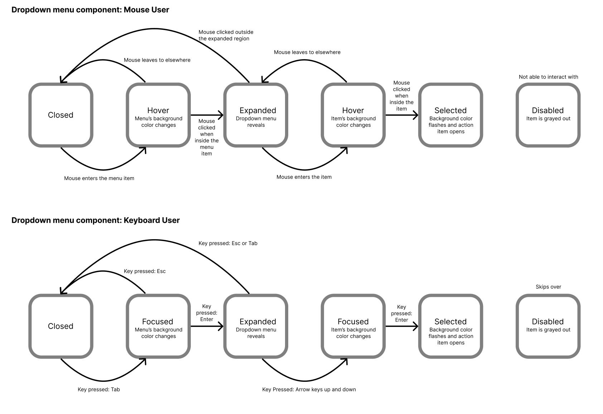
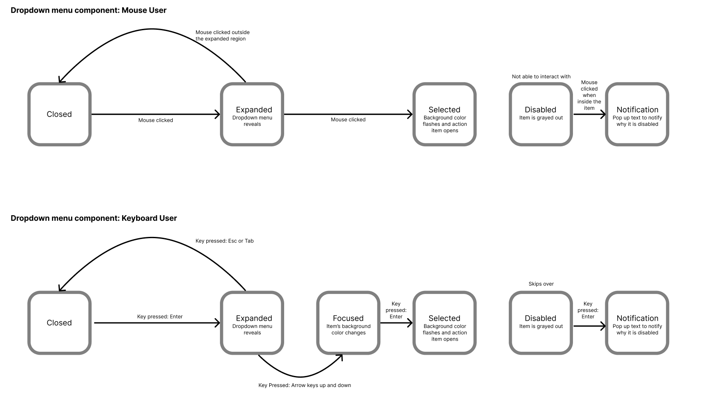
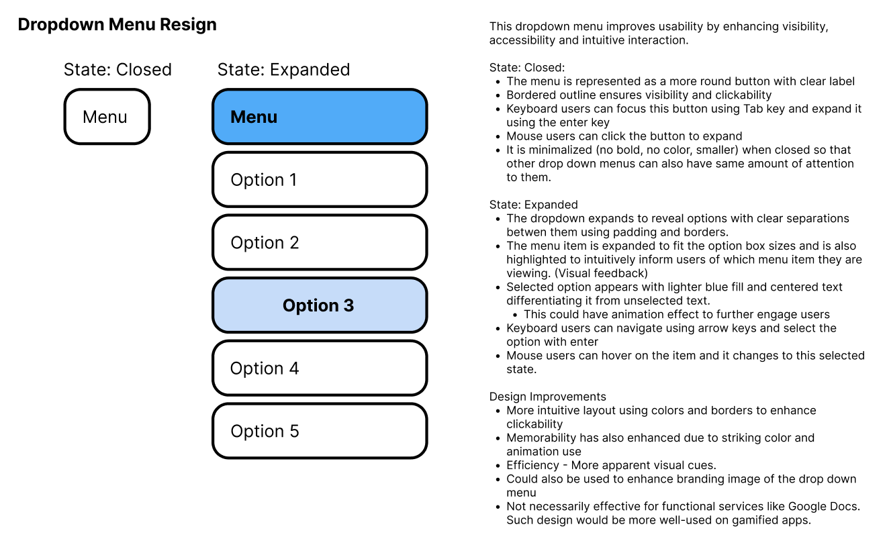

Dropdown menus are an essential part of user interfaces, yet their accessibility is often overlooked. This case study explores how dropdown menus in various applications incorporate accessibility features and how they can be improved. The goal is to analyze existing designs, identify areas for enhancement, and propose a redesigned dropdown menu that improves usability, efficiency, and accessibility.
First, we examine how dropdown menus function across different platforms, including Google Docs, Finder (Mac), and Google Bookmarks. These comparisons help us understand how different services approach dropdown interactions.
Google Docs
Finder
Google Bookmarks
| Google Docs | Finder | Google Bookmarks | |
|---|---|---|---|
| Mouse/Touchpad |
|
|
|
| Keyboard |
|
|
|
| Touch (If available) |
|
N/A | |
The mouse and touchpad are the most learnable and intuitive input methods because they rely on visual interaction. Users have only three primary actions (hover, left-click, and right-click) which makes the learning process straightforward. In contrast, keyboard navigation is less intuitive due to the multiple key combinations required, making it more complex to learn and remember.
When interacting with dropdown menus, inputs trigger internal state changes, while outputs provide feedback to users. Outputs can vary in visual style (color, opacity, border thickness) or be represented textually (e.g., an on/off switch). There are also hidden outputs, such as alt text or component names, which are essential for screen reader users. Below is an analysis of how the dropdown menus in Google Docs, Finder, and Google Bookmarks communicate changes to users.
| Google Docs | Finder | Google Bookmarks | |
|---|---|---|---|
| Visual Feedback | Dropdown items are highlighted when hovered. Selected items have a darker background than hover when clicked for the duration of clicked time. | Highlighted menu items change color when hovered or selected. Pressed buttons have a slight indicator that it has been selected (goes colored and default fast) when the click is released. | Bookmarks are highlighted on hover. Selected bookmarks are indicated with a slightly darker background. When clicked, the highlighted and default state alternates quickly to indicate it has been clicked. Drag to move. Horizontal lines between items to indicate where it will be placed. Letters of the item name appear at the cursor to indicate what is getting moved. |
| Text Feedback | No explicit text feedback. All actions are visual. | ||
| Focus order | When the Tab key is pressed, it exits the menu. | When the Tab key is pressed, it moves to the next menu item. (e.g. File → Edit → View → Go) | No action is done when the Tab is pressed. |
| State Indications | Active items have a grey background. When the expandable item is expanded, the triangle that indicates expansion also turns slightly darker gray. Disabled items are grayed out. | Active items have a blue highlight. Disabled items are dimmed. | Selected bookmarks show a faint highlight. |
| VoiceOver | Reads out menu item names as they are focused. Skips over those that are disabled. Reads out roles and structure. | Announces menu items sequentially. Do not skip those that are disabled. Reads out what is on it including command keys. | Announces menu items selected. Able to navigate easily just using arrow keys. Only text is read. |
| Overall accessibility | Great. Voiceover may be confusing as it indicates a lot of information that may be unnecessary. | Great. | Great, but it could be due to the simplicity of the folder. Unsure of how other accessibility could work. |
Here are the state models to visualize how a user may interact with drop down menu that currently exists.
Each models focus on mouse users and keyboard users.
What if there is a trade off that changes how users perceive its learnability?
To explore the impact of design trade-offs, I created an alternative version that removes hover and focus states. While this adjustment improves screen reader usability by reducing unnecessary states, it sacrifices visual clarity for keyboard and mouse users. Additionally, I incorporated actions for disabled items to provide guidance on why they cannot be selected, which benefits users relying on assistive technologies.
Based on the observation of Part 1 and Part 2, I redesigned a new dropdown menu which integrates visual and functional improvements to enhance user experience.
The dropdown menus in existing applications generally support basic usability but often lack strong accessibility considerations. While they offer fundamental focus states, such as background color changes, they do not provide clear enough feedback for all users. My redesign enhances these features by incorporating clearer highlights, improved spacing, and intuitive focus indicators, making navigation easier and more engaging.
One significant accessibility improvement is the introduction of stronger visual cues when hovering or selecting an item. Instead of subtle background color changes, I implemented bold text, borders, and contrast enhancements to improve visibility for users with vision impairments.
Kat Holmes’ concept of solving mismatches applies here. Dropdown menus that are not designed inclusively create barriers for users with motor impairments, cognitive disabilities, or vision impairments. My redesign ensures that spacing, readability, and clear differentiation reduce these mismatches, making the component more inclusive.
For example, a positive impact example is the addition of keyboard navigation with arrow keys and enter selection, which is intuitive. If the user wants to travel down the menu list, they think of going down to press the down arrow key. This keyboard input allows the users with motor impairments who rely upon keyboard usage instead of a mouse.
Conversely, a negative impact could be drawn on the tradeoff design I did in part 2. Removing the hover item would confuse users with what is being selected as one of the issues addressed with current dropdown menus is that they automatically close when the mouse moves away too quickly. This can be frustrating for users with limited fine motor control. The current design with focused and selection states minimizes this issue by maintaining selection states and providing clear hover feedback.
Dropdown menus are often optimized for mouse users, making keyboard and screen reader navigation less intuitive. Since most users rely on a combination of inputs, mouse interaction tends to be prioritized, which can negatively impact those who depend on alternative navigation methods. My redesign aims to balance usability across all input methods to create a more inclusive experience.
The webpage has been deployed with Vercel. View Live Page